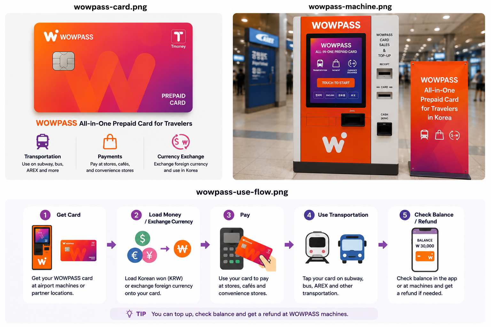
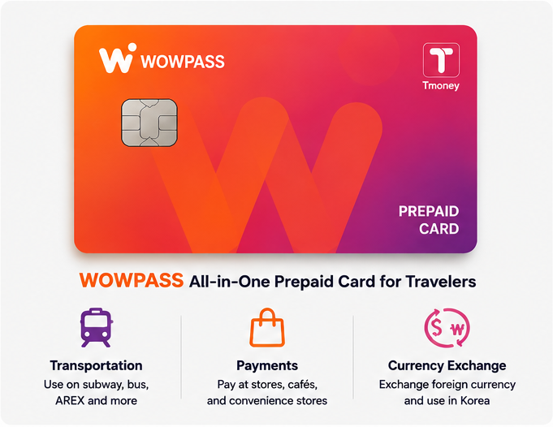
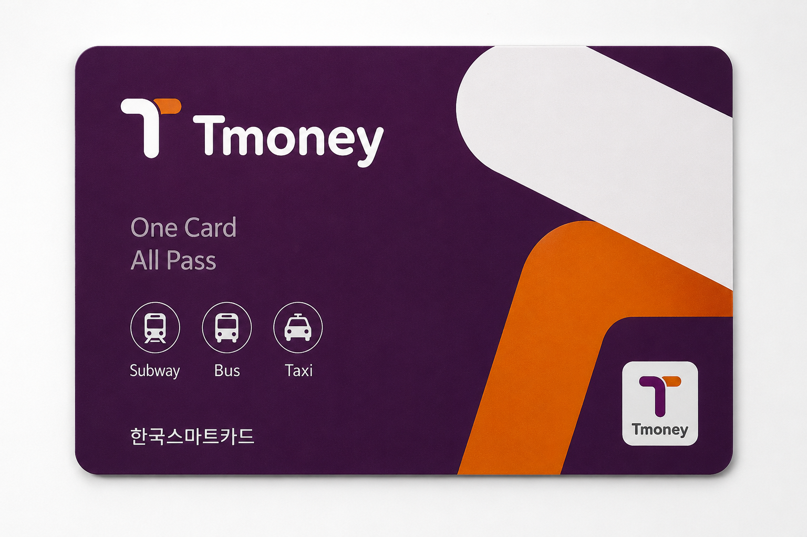
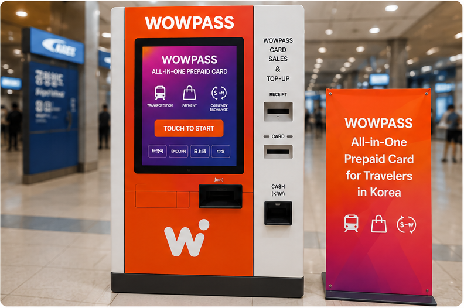
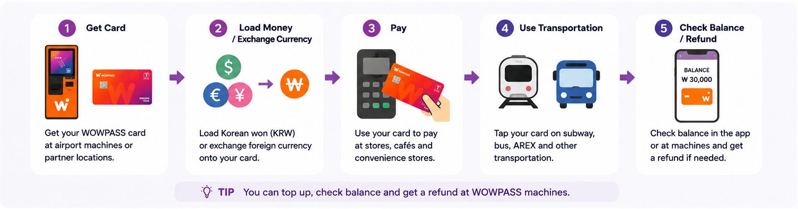

WOWPASS kann nützlich sein, wenn du auf einer physischen Karte möchtest: eine koreanische Prepaid-Zahlungskarte Währungsumtausch T-money Die Idee „alles in einem“ kann aber irreführend sein. Das Geld für Einkäufe und das Geld für Bus und U-Bahn liegen auf zwei getrennten Guthaben.
Wenn nur öffentlicher Verkehr gebraucht wird, ist eine normale T-money-Karte meistens einfacher. WOWPASS wird interessanter, wenn zusätzlich gewünscht sind: koreanisches Zahlungsguthaben unterstützte Aufladung aus Fremdwährung Bargeldabhebung

Kartenverwaltung in der App Zahlungsseite und Verkehrsseite befinden sich auf derselben Plastikkarte. Sie teilen aber nicht dasselbe Guthaben.
Was WOWPASS tatsächlich macht
WOWPASS bündelt mehrere Dinge, die ausländische Besucher in Korea sonst getrennt organisieren.
Das WOWPASS-Guthaben funktioniert als Prepaid-Zahlungsguthaben für normale Einkäufe. Die Karte enthält zusätzlich eine T-money-Verkehrsfunktion für Busse und U-Bahn. Unterstütztes ausländisches Bargeld kann an WOWPASS-Automaten gewechselt und geladen werden. Die App unterstützt weitere Auflade- und Kartenverwaltungsfunktionen.
Genau diese Kombination ist der Reiz. Und zugleich der Punkt, an dem die meisten Missverständnisse beginnen.
Zahlungsseite und Verkehrsseite teilen dieselbe physische Karte. Nicht dasselbe Guthaben. Wer ₩50,000 in das WOWPASS-Zahlungsguthaben lädt, hat dadurch nicht ₩50,000 U-Bahn-Guthaben. Die T-money-Seite muss separat finanziert werden.
Wer diesen Unterschied verstanden hat, findet WOWPASS relativ unkompliziert. Wer ein einziges Guthaben für wirklich alles erwartet, kann schon am ersten U-Bahn-Gate unangenehm überrascht werden.
Eine Karte, zwei Guthaben
Das sollte verstanden sein, bevor Geld auf die Karte geladen wird.


Normale Einkäufe nutzen das WOWPASS-Prepaid-Guthaben. Verkehr nutzt das integrierte T-money-Guthaben.
WOWPASS-Guthaben
T-money-Guthaben
Hauptnutzung
Geschäfte, Restaurants und andere Offline-Kartenzahlungen
Busse, U-Bahnen und unterstützter Verkehr
So wird bezahlt
IC-Chip der Karte in das Zahlungsterminal stecken
Karte auf den Verkehrsleser tippen
So wird aufgeladen
WOWPASS-Automat oder unterstützte mobile Auflademethoden
separates T-money-Aufladen
Lädt das andere Guthaben dieses automatisch mit auf?
Nein
Nein
App-Unterstützung
Guthaben, Transaktionen und Kartenverwaltung
Guthabenanzeige und aktuelle App-Aufladung
Der eigene WOWPASS-Leitfaden trennt diese beiden Guthaben ausdrücklich. Praktische Folge:
Eine erfolgreiche Zahlung im Geschäft sagt nichts darüber aus, wie viel U-Bahn-Guthaben noch vorhanden ist. Ein gesundes T-money-Guthaben sagt nichts über das WOWPASS-Zahlungsguthaben.
Wenn ein U-Bahn-Gate meldet, dass das Verkehrsguthaben zu niedrig ist, hilft es nicht, nur die WOWPASS-Zahlungsseite aufzuladen.
Eine WOWPASS-Karte bekommen
WOWPASS-Karten können über aktuelle Reservierungs- und Ausgabeoptionen bezogen werden. Dabei sollte Flughafenabholung nicht automatisch mit Ausgabe an einem WOWPASS-Selbstbedienungsautomaten gleichgesetzt werden.
Stand August 2026 zeigen die offiziellen Reservierungsseiten Abholoptionen an: Incheon Airport Terminal 1 Incheon Airport Terminal 2 einschließlich Abholung in einem CU Convenience Store am Flughafen. Zusätzlich gibt es vorab gebuchte Automatenabholung an: U-Bahn-Stationen Hotels Convenience Stores anderen Standorten Die offiziellen Seiten zeigen derzeit:
regulärer Kartenpreis: ₩6,000 vorab gebuchter Preis bei den gelisteten Optionen: ₩5,500 Preise und Abholverfahren können sich ändern. Die aktuelle Reservierungsseite hat deshalb Vorrang vor einem alten Screenshot oder Blogbeitrag.
Nach Erhalt der Karte nicht sofort einen großen Betrag laden. Zuerst:

Karte in der WOWPASS-App registrieren verstehen, welches Guthaben geladen wird nur so viel hinzufügen, wie voraussichtlich gebraucht wird Die App-Registrierung wird besonders wichtig, wenn die Karte später verloren geht.
Geld laden und Fremdwährung wechseln
Hier gibt es zwei verschiedene Vorgänge, die leicht miteinander verwechselt werden: ausländisches Bargeld an einem WOWPASS-Automaten wechseln
Guthaben über die App hinzufügen WOWPASS bewirbt derzeit Unterstützung für Bargeldaufladung in 16 Währungen. Der mobile Aufladedienst nennt außerdem Unterstützung für internationale Karten und E-Wallets.
Auf der aktuellen offiziellen Seite werden unter anderem gezeigt: Mastercard JCB Visa über PayPal
Wenn unterstütztes ausländisches Bargeld am WOWPASS-Automaten verwendet wird, wird es in koreanischen Won umgerechnet und dem WOWPASS-Zahlungsguthaben hinzugefügt. Mobile Aufladung funktioniert anders.
Dabei werden keine ausländischen Banknoten in einen Automaten gesteckt. Stattdessen wird über eine unterstützte internationale Zahlungsmethode in der App Guthaben hinzugefügt. Dieser Unterschied zählt beim Kostenvergleich. Wechselkurs und Aufladegebühr sind nicht automatisch dasselbe. Vor einer großen Aufladung prüfen:

tatsächlichen KRW-Betrag, der gutgeschrieben wird Gebühr der konkreten Methode Nicht annehmen, jede Art WOWPASS zu finanzieren koste gleich viel.
Mit WOWPASS bezahlen
Bei normalen Einkäufen funktioniert WOWPASS eher wie eine koreanische Prepaid-Karte als wie eine Verkehrskarte.
Die offizielle Anleitung sagt: Das WOWPASS-Zahlungsguthaben kann bei Offline-Händlern in Korea verwendet werden, die inländische Kredit- oder Debitkartenzahlungen akzeptieren. Dazu gehören auch manche Orte, an denen eine ausländische Karte möglicherweise nicht funktioniert. Für diese Käufe lautet die offizielle Anweisung: IC-Chip der Karte in das Kartenlesegerät stecken.
Das ist etwas anderes als in der U-Bahn.
Im Geschäft, Restaurant oder Café wird vom WOWPASS-Guthaben bezahlt. Im Bus oder in der U-Bahn wird die Karte getippt und das getrennte T-money-Guthaben verwendet. Das gilt auch bei Selbstbedienungskiosken.
Ein Kontaktlos-Symbol bedeutet nicht automatisch, dass jede WOWPASS-Zahlung wie T-money per Tap erfolgen soll. Die eigene WOWPASS-Werbung verwendet teilweise sehr breite Aussagen zur Akzeptanz. Für Reiseplanung ist die sicherere Regel:
WOWPASS als koreanische Offline-Prepaid-Zahlungskarte behandeln. Nicht als Garantie dafür, dass: jeder Online-Checkout jede ausländische Website jedes ungewöhnliche Zahlungsterminal die Karte akzeptiert. Wenn eine Händlerzahlung scheitert, eine andere Zahlungsmethode als Alternative verwenden.
Nicht wiederholt Geld zwischen Guthaben verschieben in der Annahme, die Guthabenseite müsse das Problem sein.
Koreanischen Won abheben
WOWPASS kann einen Teil des Zahlungsguthabens an unterstützten WOWPASS-Automaten wieder in koreanisches Bargeld umwandeln.
Die aktuelle offizielle Website nennt: maximal ₩100,000 pro Abhebung₩1,000 Gebühr pro Abhebung Abhebungen können wiederholt werden Das sind aktuelle Servicebedingungen. Vor einer zukünftigen Reise erneut prüfen, wenn davon abhängig gemacht wird.
Wichtig ist die Unterscheidung: Das ist eine WOWPASS-Guthabenabhebung über das WOWPASS-System. Nicht dasselbe wie ein koreanisches Bankkonto mit uneingeschränktem Zugang zu Geldautomaten im Inland.
Für Reisende, die gelegentlich koreanisches Bargeld brauchen, kann das praktisch sein. Weniger sinnvoll ist es, WOWPASS bei einem langen Aufenthalt als Ersatz für jede Bank- oder ATM-Funktion zu behandeln.
Das T-money in WOWPASS
Die Verkehrsfunktion in WOWPASS ist echtes T-money.
Die offizielle WOWPASS-Anleitung sagt, dass das T-money-Guthaben in koreanischen: U-Bahnen Bussen genutzt werden kann. Die Karte wird dabei auf den Verkehrsleser getippt. WOWPASS bewirbt außerdem aktuelle Verkehrsnutzung über Bahn und Bus hinaus – einschließlich unterstützter Taxis.
Das entscheidende Wort bleibt:
Guthaben. Eine WOWPASS-Karte im Portemonnaie bedeutet nicht, dass die Verkehrsseite finanziert ist. Das T-money-Guthaben muss selbst genug Wert enthalten.
Die App kann derzeit: T-money-Guthaben anzeigen bei niedrigem Saldo Aufladung unterstützen
Für Reisende, die täglich Bahn und Bus nutzen, ist das bequem, weil normalerweise keine zweite physische T-money-Karte nötig ist. Der Vorteil ist Komfort. Nicht die Vereinfachung der zugrunde liegenden Guthabenstruktur. Man muss weiterhin wissen, welches Geld welchen Teil der Reise bezahlt.
Wofür die WOWPASS-App tatsächlich nützlich ist
Die App ist im Alltag nützlicher, als sie zunächst wirken kann. Sie kann:
Die wichtigste Funktion ist weniger spektakulär: Kartensicherheit.
WOWPASS sagt, eine verlorene oder gestohlene Karte könne in der App pausiert werden, um das WOWPASS-Guthaben zu schützen. Danach kann eine Ersatzkarte ausgegeben werden.
Genau deshalb sollte die physische Karte kurz nach Erhalt in der App registriert werden. Nicht erst, wenn bereits etwas schiefgegangen ist.
Die App unterstützt derzeit außerdem Übertragungen zwischen WOWPASS-Nutzern. Das kann für gemeinsam reisende Freunde praktisch sein. Für die meisten Reisenden bleibt es aber zweitrangig gegenüber: Ausgaben überwachen Karte verwalten Zahlungsguthaben schützen
Wenn die Karte verloren geht
Eine verlorene Reisekarte ist lästig. Eine verlorene Reisekarte mit hohem Prepaid-Guthaben ist ernster.
Wenn WOWPASS verschwindet, ist die erste sinnvolle Aktion: App öffnen und Karte pausieren. WOWPASS sagt derzeit, dass dadurch das verbleibende WOWPASS-Guthaben geschützt wird und eine Ersatzkarte ausgegeben werden kann.
Nicht annehmen, jeder Bestandteil der Karte werde exakt gleich wiederhergestellt. WOWPASS behandelt in den eigenen Nutzungshinweisen: Prepaid-Guthaben T-money-Funktion getrennt. Bei Ersatz der Karte daher die aktuellen Supportanweisungen für das T-money-Guthaben ausdrücklich prüfen.
Auch deshalb nicht deutlich mehr Geld laden, als voraussichtlich gebraucht wird.
Vor der Abreise aus Korea
Am Reiseende kann eine WOWPASS-Karte an zwei Stellen Restgeld enthalten: WOWPASS-Zahlungsguthaben T-money-Verkehrsguthaben
Diese Guthaben sollten nicht wie eine einzige Rückerstattung behandelt werden.
Die offizielle WOWPASS-Anleitung bietet getrennte Funktionen für: Auszahlung des WOWPASS-Guthabens T-money-Rückerstattung Das entspricht derselben Zwei-Guthaben-Struktur, die auch während der Reise gilt.
Vor der letzten Flughafenfahrt beide Salden separat ansehen.
Wenn noch U-Bahn oder Flughafenverkehr gebraucht wird, genug Wert auf der T-money-Seite für diese Strecke lassen. Wenn auf der WOWPASS-Zahlungsseite zu viel Geld übrig ist, die aktuellen Abhebungsanweisungen prüfen, bevor der Flughafen erreicht wird.
Nicht auf die letzten Minuten vor Abflug verschieben. Rückerstattungs- oder Bargeldauszahlungsstelle liegt möglicherweise nicht dort, wo man sie erwartet.
Probleme, durch die WOWPASS komplizierter wirkt, als es ist
„Ich habe Geld auf WOWPASS geladen, aber die U-Bahn sagt, das Guthaben reicht nicht.“
Wahrscheinlich wurde das WOWPASS-Zahlungsguthaben aufgeladen, nicht das integrierte T-money-Guthaben. Beides ist getrennt. In der App das Verkehrsguthaben prüfen und bei Bedarf genau diese Seite aufladen.
„Ich habe am Flughafen einen WOWPASS-Automaten erwartet, finde aber keinen.“
Flughafenabholung und Ausgabe am Selbstbedienungsautomaten sind nicht immer derselbe Vorgang. Die aktuellen offiziellen Reservierungsseiten zeigen: konkrete Flughafenabholoptionen separat vorab buchbare Automatenabholung Den Standort verwenden, der an der eigenen Reservierung hängt. Nicht einem alten Foto von einem Kiosk folgen.
„Ich dachte, ausländisches Bargeld einzuzahlen und in der App aufzuladen sei dasselbe.“
Beides fügt nutzbaren Wert hinzu. Der Finanzierungsweg ist aber unterschiedlich. Unterstütztes ausländisches Bargeld läuft über den Umtausch am Automaten. Unterstützte internationale Karten oder E-Wallets laufen über die aktuellen mobilen Auflademöglichkeiten.
„Die Karte funktionierte in der U-Bahn, aber die Zahlung im Geschäft scheiterte.“
Die U-Bahn verwendete die T-money-Funktion. Das Geschäft verwendete die WOWPASS-Prepaid-Funktion. Zuerst das richtige Guthaben prüfen. Wenn genug vorhanden ist und das Geschäft die Karte trotzdem nicht verarbeitet: andere Zahlungsmethode verwenden. Nicht annehmen, ein erfolgreiches Auflegen im Verkehr beweise, dass jede Zahlung im Einzelhandel funktionieren muss.
„Ich habe die Karte im Geschäft an das Lesegerät gehalten und nichts passiert.“
Bei normalen WOWPASS-Einkäufen lautet die offizielle Anweisung: IC-Chip in das Kartenlesegerät stecken. Tippen ist das typische Verhalten für die Verkehrsfunktion.
„Ich habe die Karte verloren.“
So schnell wie möglich in der App pausieren. WOWPASS unterstützt derzeit: Kartensperre/Pause Ersatzkartenprozess zum Schutz des WOWPASS-Guthabens Danach den aktuellen Supportprozess für die separate T-money-Seite prüfen.
„Ich verlasse Korea und habe noch Geld auf beiden Guthaben.“
Getrennt behandeln. Die WOWPASS-Zahlungsseite hat einen eigenen Auszahlungsprozess. T-money hat einen eigenen Rückerstattungsprozess. Beides vor der letzten Flughafenfahrt prüfen.
Für wen WOWPASS sinnvoll ist
WOWPASS ist am nützlichsten, wenn mehrere Probleme gleichzeitig gelöst werden sollen.
Zum Beispiel für Reisende, die: öffentlichen Verkehr nutzen eine koreanische Prepaid-Karte für Alltagskäufe möchten unterstütztes ausländisches Bargeld bequem wechseln möchten oder per App Guthaben hinzufügen möchten Dann kann eine physische Karte echten Wert haben, statt alles einzeln zu organisieren.
WOWPASS kann außerdem zu Reisenden passen, die ein fest definiertes Reisebudget auf ein Prepaid-Guthaben legen möchten, statt ihre Haupt-Auslandskreditkarte für jeden kleinen Einkauf einzusetzen. Deutlich schwächer ist der Nutzen, wenn:
die eigene Auslandskarte zuverlässig in Korea funktioniert nur eine Verkehrskarte gebraucht wird Dann bedeutet WOWPASS: noch eine App noch ein Guthaben noch ein Kartensystem ohne ein echtes Problem zusätzlich zu lösen.
Ein Besucher mit drei Tagen Seoul und nur U-Bahn-Bedarf profitiert nicht automatisch von mehr Funktionen.
WOWPASS oder normale T-money-Karte?
Eine normale T-money-Karte erledigt eine wichtige Aufgabe mit sehr wenig Einrichtung: Verkehr.
WOWPASS baut T-money in ein breiteres Zahlungsprodukt ein. Das kann vermeiden, getrennte Zahlungs- und Verkehrskarten zu tragen. Dieser Komfort ist aber nur dann besonders wertvoll, wenn auch: Zahlung Währungsumtausch Bargeldabhebung
App-Verwaltung genutzt werden sollen. Wenn die Entscheidung wirklich nur zwischen diesen beiden Karten liegt: den T-money-vs.-WOWPASS-Leitfaden für den vollständigen Vergleich verwenden.
Wenn bereits klar ist, dass ausschließlich öffentlicher Verkehr gebraucht wird: T-money-Leitfaden
WOWPASS FAQ
Ist WOWPASS dasselbe wie T-money?
Nein. WOWPASS ist eine Prepaid-Zahlungskarte für ausländische Besucher, die zusätzlich eine T-money-Verkehrsfunktion enthält. WOWPASS-Zahlungsguthaben und T-money-Guthaben sind getrennt.
Kann ich WOWPASS in Bus und U-Bahn verwenden?
Ja. Die integrierte T-money-Funktion kann im koreanischen öffentlichen Verkehr verwendet werden. Das T-money-Guthaben muss aber separat vom WOWPASS-Zahlungsguthaben finanziert werden.
Brauche ich zusätzlich eine T-money-Karte, wenn ich WOWPASS habe?
Für normale Bus- und U-Bahn-Nutzung normalerweise nicht. WOWPASS enthält bereits die T-money-Verkehrsfunktion. Wenn Verkehr die einzige Funktion ist, die gebraucht wird, kann eine separate normale T-money-Karte trotzdem einfacher sein.
Kann ich das Geld, das ich auf WOWPASS geladen habe, für die U-Bahn verwenden?
Nicht automatisch. WOWPASS-Zahlungsguthaben und T-money-Guthaben sind getrennt. Vor einer Fahrt das Verkehrsguthaben prüfen.
Kann ich WOWPASS in Geschäften und Restaurants verwenden?
Laut offizieller Anleitung kann das WOWPASS-Zahlungsguthaben bei Offline-Händlern in Korea verwendet werden, die inländische Kredit- oder Debitkartenzahlungen akzeptieren. Für normale Einkäufe wird der IC-Chip der Karte eingesteckt.
Kann ich WOWPASS für Online-Einkäufe verwenden?
Nicht annehmen, dass eine erfolgreiche Offline-Zahlung mit WOWPASS automatisch bedeutet, dass ein koreanischer Online-Checkout die Karte akzeptiert. Die offizielle Nutzungsanleitung ist besonders klar bei Offline-Händlerzahlungen. Für Probleme mit koreanischen Online-Zahlungen den separaten Korea-Inside-Leitfaden zu Online-Zahlungen verwenden.
Kann ich mit WOWPASS ausländisches Bargeld wechseln?
WOWPASS unterstützt derzeit Bargeldaufladung in 16 Währungen, vorbehaltlich der aktuellen Automaten- und Währungsregeln. Vor Bestätigung den angezeigten Umrechnungsbetrag prüfen.
Kann ich WOWPASS mit einer ausländischen Karte aufladen?
WOWPASS bewirbt derzeit mobile Aufladung über internationale Karten und E-Wallets. Auf der offiziellen Seite werden unter anderem genannt: Mastercard JCB Visa über PayPal Aktuelle Verfügbarkeit und Gebühren vor einem größeren Betrag in der App prüfen.
Kann ich WOWPASS am Incheon Airport bekommen?
Die aktuellen offiziellen Reservierungsseiten zeigen Abholoptionen für: Incheon Airport Terminal 1 Incheon Airport Terminal 2 Den konkreten Abholort der aktuellen Reservierung verwenden. Nicht annehmen, neben dem eigenen Ankunftsgate stehe automatisch ein Selbstbedienungsautomat.
Wie viel kostet eine WOWPASS-Karte?
Zum Zeitpunkt der Überprüfung im August 2026 zeigen die offiziellen Incheon-Airport-Reservierungsseiten: regulärer Kartenpreis: ₩6,000 gelistete Vorabbuchungsoption: ₩5,500 Preise und Aktionen können sich ändern.
Kann ich mit WOWPASS koreanisches Bargeld abheben?
Ja. Die aktuelle offizielle Seite sagt, WOWPASS-Automaten unterstützen KRW-Abhebungen vom Kartenguthaben. Aktuell: maximal ₩100,000 pro Abhebung₩1,000 Abhebungsgebühr Vor der Reise die aktuelle Regel erneut prüfen, da sich Servicebedingungen ändern können.
Was soll ich tun, wenn ich die Karte verliere?
Wenn die Karte in der App registriert ist, kann WOWPASS sie derzeit pausieren, um das WOWPASS-Guthaben zu schützen. Es gibt außerdem einen Ersatzkartenprozess. Für die Behandlung des separaten T-money-Guthabens die aktuellen Supportanweisungen prüfen.
Lohnt sich WOWPASS für eine kurze Reise?
Kann es. Die Reisedauer ist weniger wichtig als die Frage, wie bezahlt werden soll. Wenn Zahlung, Verkehr und Währungsumtausch zusammen gewünscht sind, kann WOWPASS auch auf einer kurzen Reise nützlich sein. Wenn nur Bus und U-Bahn gebraucht werden, ist normales T-money einfacher.
Kurse, Gebühren, Abholorte, unterstützte Finanzierungsmethoden und Serviceregeln können sich ändern. Bei Geld oder einem bestimmten Automaten soll die aktuelle WOWPASS-App oder offizielle Website Vorrang vor einem älteren Screenshot oder Reisebeitrag haben.